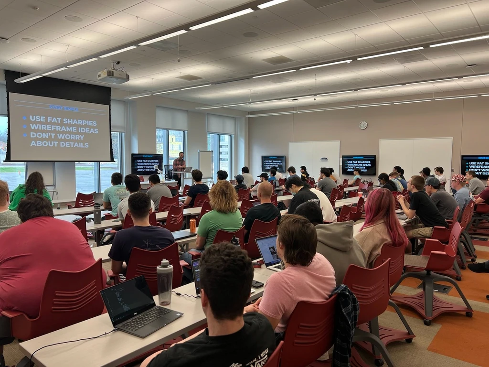

Remote
I joined Remote in 2021 with the intention of going back to an individual contributor role. This was in large part because of a new found love for writing Elixir (and also needing a new challenge). After a few months I quickly realized that as much as I loved writing Elixir every day, I missed the fulfillment of working closely with folks to help them accomplish their goals.
Since that time I have transitioned back to an Engineering Team Lead, which allows me the opportunity to continue to write code while also working closely with others on their software engineering journey. This is my sweet spot, and I love being a small part of other folks career development.
Working at Remote has given me the opportunity to work with people literally all around the world. I have had teammates in Poland, Portugal, India, Taiwan, Bosnia, Kenya, and Australia just to name a few. Obviously we have gotten pretty good at asynchronous work, and if you're curious you can read more about how we work here. A while back I was included in a blog series featuring some of our engineers, which you can check out here if you'd like.
Workflow Engine (May 2025 - Oct 2025)
Team Lead
This team quickly pivoted from automating simple tasks for our customers to creating highly customizable flows for time-off, contract changes, onboarding and various approval processes. Any time software is made highly customizable there is a danger of adding so much complexity that the feature is difficult to use. This team worked diligently with customers to make sure we were build a tool that was both extremely powerful, but also easy to use.
Jobs (Nov 2024 - May 2025)
Team Lead
The Jobs team is responsible for building and maintaining the remote.com/jobs platform, which connects global talent with remote-friendly employers. This website allows job seekers to explore fully remote and hybrid job opportunities across various industries, apply directly to open positions, and connect with companies looking to hire internationally.
Market Insights (Oct 2023 - Feb 2025)
Team Lead
This team is responsible for providing critical insights needed for employers to make intelligent hiring decisions. Those insights consist of things like salary data, talent pool information, employer benefit costs, taxes, etc.
Product Led Growth (2022 - Oct 2023)
Senior Software Engineer
- Architected prompt system to be used across other product teams. This allowed teams to prompt users to perform certain tasks based on any criteria. Our team used this to make certain features obvious for new users.
- Designed and implemented integrations for many customer management systems. Mixpanel, HubSpot, Zendesk and Salesforce to name a few.
- Introduced Analytic tracking into our product for all product teams to use. Worked with other teams on what is important to track based on product-led growth needs.
Knowledge Database (Oct 2021 - 2022)
Senior Software Engineer
- Responsible for creating a single source of truth for data that would be shared to a wide variety of internal and external locations. This data included country specific details of employment requirements and other details.
- Using the newly created Knowledge Database, we created a Cost Calculator that could build an estimate of how much it costs to employ folks in specific countries. This was originally created for internal sales but quickly was altered to also be used for employers within the product, and now a limited version of the tool is available for free on the public website.

